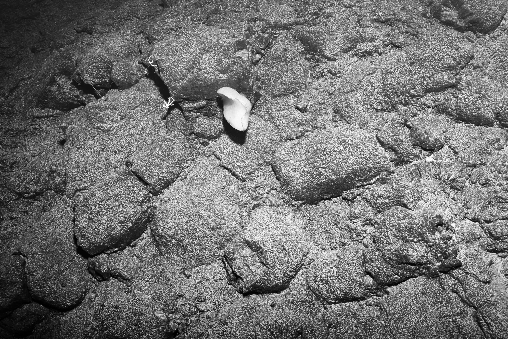
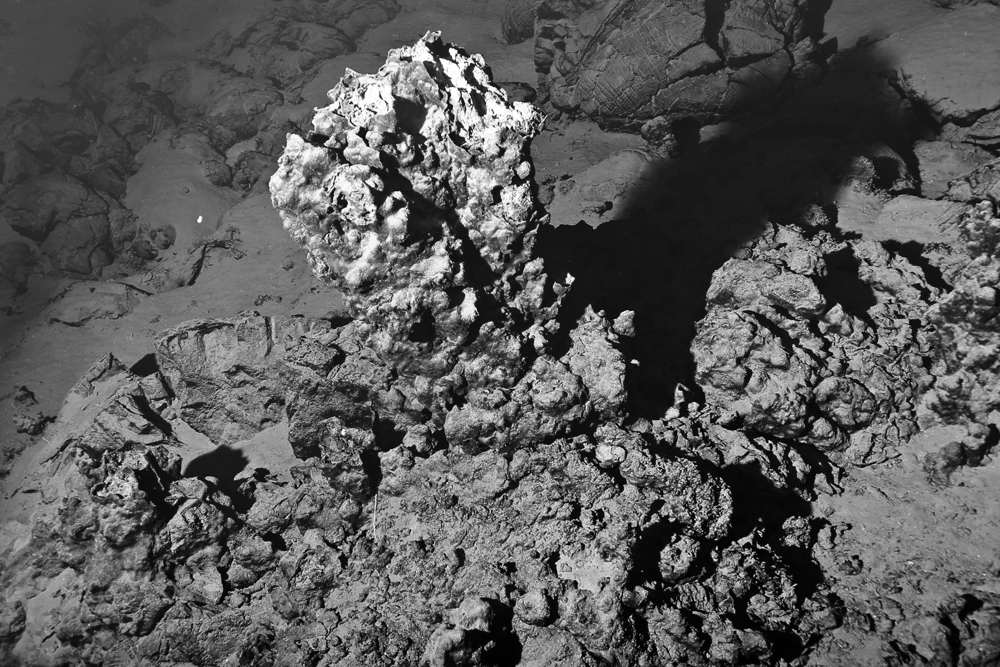
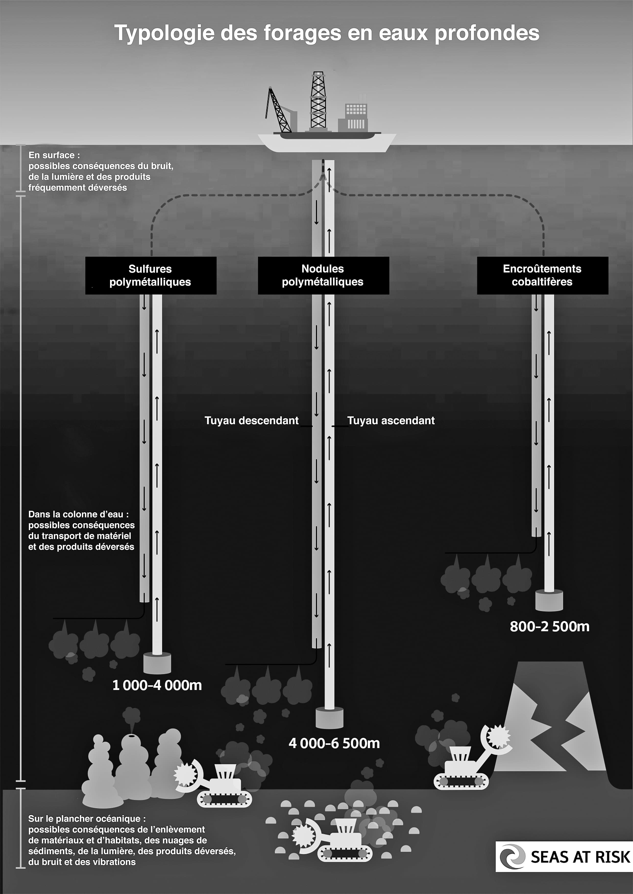
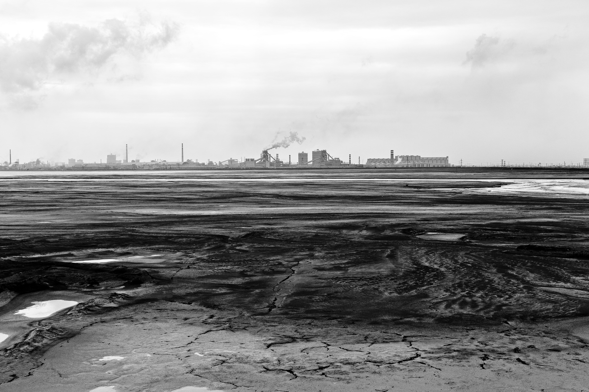
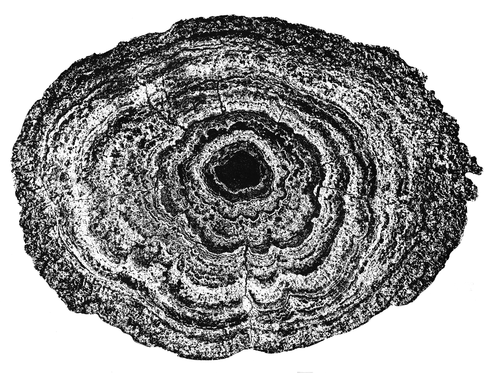
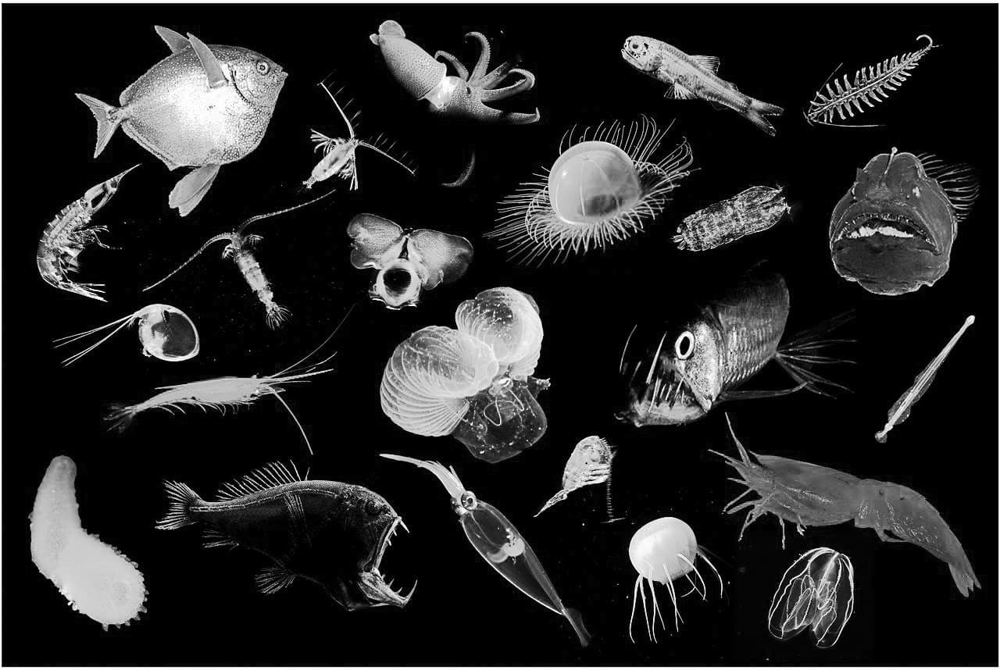

En 2021 s’ouvre la décennie des Nations unies pour les sciences océaniques au service du développement durableoceandecade.org, signe à la fois de l’intérêt pour les océans et du besoin d’interface politique et scientifique les concernant. Ils jouent un rôle majeur dans la lutte contre le réchauffement climatique car ce sont des puits de carbone naturels qui absorbent, conjointement avec les forêts, 50 % du CO2 émis sur TerreLes forêts et les océans absorbaient la quasi-totalité du carbone avant la révolution industrielle. Le réchauffement de la température de l’eau provoqué par le changement climatique entraîne un cercle vicieux, le carbone stocké dans les océans est à nouveau libéré, des quantités importantes de gaz à effet de serre sont rejetées dans l’atmosphère, ce qui réchauffe encore plus la planète.. Longtemps, ils ont paru trop vastes pour pouvoir être touchés par les activités humaines – ils représentent 71 % de la surface de la Terre – mais on sait maintenant qu’ils subissent des transformations profondes et irréversibles : réchauffement de leur température, acidification, pollutions (de plastiques et micro-plastiques notamment), modifications des courants marins. Sources de nourriture, de matériaux et d’espace, ils suscitent un intérêt économique croissant et des formes multiples d’exploitation viennent s’ajouter à la pêche et aux transports maritimes : plateformes de forage offshore, prélèvements d’eau pour désalinisation, deep sea mining. Un rapportJean-Baptiste Jouffray, Robert Blasiak, Albert V. Norström et al., « The Blue Acceleration : The Trajectory of Human Expansion into the Ocean », One Earth, 2 (1), 2020, p. 43-54. daté du 24 janvier 2020 parle d’une « accélération bleue », en référence à ce que Will Steffen et Paul Crutzen ont été les premiers à identifier, en 1945, comme la « grande accélération », caractéristique de l’Anthropocène, notre nouvelle époque géologique dont les débuts remonteraient à ceux de la révolution industrielle. De fait, tous les indicateurs concernant la dégradation des océans sont en croissance exponentielle depuis le début des années 2000 : les activités augmentent par leur nombre et leur intensité, certaines aires géographiques devenant littéralement saturées.
Qu’est-ce que le deep sea mining ?
Certains matériaux sont devenus « essentiels à nos technologies et au fonctionnement des sociétés modernes », souligne Bramey MurtonDamian Carrington, « UK expedition explores potential and risks of deep sea gold rush », The Guardian, 04/07/2016. du Centre national d’océanographie du Royaume-Uni. En font partie les terres rares, des matériaux utilisés pour les ordinateurs et les smartphones, mais aussi les panneaux solaires, les éoliennes et les voitures électriques. Le développement de ces technologies, qu’elles soient numériques ou liées à la transition énergétique, nécessite de nouveaux territoires d’extraction. C’est ainsi que depuis le début des années 2000, la combinaison d’une demande en matériaux croissante, des progrès technologiques et de la raréfaction des ressources premières terrestres a rendu le deep sea mining économiquement viable et profitable.
Qu’est-ce que le deep sea mining ?
Le deep sea mining n’a pas de traduction stabilisée en français, mais on parle généralement de forage en eaux profondes. Cette activité touche trois types de gisement :
les nodules polymétalliques (ou nodules de manganèse) : des concrétions rocheuses qui se trouvent dans les plaines abyssales, à des profondeurs allant de 3 000 à 6 000 mètres sous l’eau. Ils existent par milliards dans la zone Clarion-Clipperton du Pacifique Sud, dépassant en quantité les réserves terrestres. Ils sont riches en manganèse, fer, silicium, aluminium, nickel, cuivre, or ou cobalt, mais leur croissance est extrêmement lente, de l’ordre du centimètre en quelques millions d’années.
Zone à nodules du Pacifique Nord, Ifremer (2004).
les encroûtements cobaltifères : également très lents à se développer, ils se trouvent dans des profondeurs allant de 800 à 2 500 mètres sous l’eau, en particulier dans la zone à l’ouest du Pacifique qui s’étend d’Hawaï à la fosse des Mariannes. Fermement attachés à la pente des monts sous-marins, ils sont beaucoup plus difficiles à miner que les nodules polymétalliques.

Encroûtements cobaltifères dans le sud-ouest du Pacifique, Ifremer (2010).
les sulfures polymétalliques : situés dans des zones géologiques actives et à des profondeurs à partir de 800 mètres, ils se présentent sous deux formes, à savoir des cheminées hydrothermales (actives ou éteintes) ou des dépôts de sulfures massifs sous-marins, à proximité de ces cheminées. De structures tridimensionnelles, ils se développent bien plus rapidement que les nodules et les encroûtements.

Cheminée hydrothermale dans le sud-ouest du Pacifique, Ifremer (2012).
Les techniques de forage dépendent de la nature du site. Généralement, on utilise une version transformée des engins servant aux mines terrestres. Déposés au fond de l’océan, ils en extraient une boue mêlant les minerais à de l’eau est aspirée par un tube jusqu’aux navires à la surface. Cette boue est asséchée avant d’être transportée tandis que l’excès d’eau est rejeté dans les fonds marins. Environ 1,5 million de kilomètres carrés dans les océans Pacifique, Atlantique et Indien ont, à ce jour, fait l’objet de licences d’exploration minière, confiées à des gouvernements et à des entreprises.

Schéma deep sea mining
Seas at Risk.
Le deep sea mining ne se limite pas à la seule extraction des minerais. Il inclut l’exploration des fonds marins, le transport et le traitement des matériaux extraits. Cet éventail d’activités s’exerce dans des géographies différentes (fonds marins, surfaces, côtes) et des contextes légaux variés (Zone économique exclusive ou ZEEUne Zone économique exclusive est un espace maritime ou océanique sur lequel un État dispose de l’exploitation exclusive des ressources. Elle se situe des côtes jusqu’aux eaux internationales. dépendant des législations nationales et aire internationale).
Des premières explorations à aujourd’hui
Les premières explorations de nodules polymétalliques sont menées pendant les années 1960 puis abandonnées par manque de retombées concrètes et ce, malgré d’importants investissements (650 millions de dollars au cours de la période). En 1977, des cheminées hydrothermales sont découvertes au large des îles Galapagos par le sous-marin américain Alvin. En 1982 est adoptée la troisième Convention des Nations unies sur le droit de la mer (CNUDM ou UNCLOS en anglais), considérée comme la Constitution des océans : elle définit les grands principes concernant l’exploitation des ressources maritimes et reconnaît celles des grands fonds marins – hors des eaux nationales – comme « patrimoine commun de l’humanité ». Les années 2000 voient cependant l’ouverture d’une nouvelle phase de deep sea mining pour répondre à la demande croissante en métaux rares, recherchés notamment pour l’électronique et les technologies dites vertes. L’Autorité internationale des fonds marins (International Seabed Authority, ISA), créée en 1994 sous l’égide de l’ONU pour organiser et contrôler toutes les activités relatives aux ressources minérales des fonds marins et les activités connexes (exploration, transport) dans la zone internationale, a conclu à ce jour 29 contrats d’exploration minière (pour 22 pays, dont la France), exclusifs et longs de quinze ans. Fin 2020, les membres de l’Autorité internationale devaient se réunir et adopter un nouveau code minier pour réguler les fonds marins internationauxD’abord prévue au printemps 2020, la session a été repoussée une deuxième fois à une date encore non confirmée.. Il doit permettre aux entreprises de passer de la phase d’exploration à celle d’exploitation commerciale. Sa teneur importe d’autant plus qu’il pourrait bien servir de modèle aux États qui soutiennent les activités de deep sea mining, susceptibles de l’importer dans leur législation pour réguler leurs zones nationales.
Après avoir passé deux siècles à creuser la terre ferme pour en extraire des énergies fossiles et des minerais précieux, nous entamons depuis deux décennies une quête vers un nouvel eldorado industriel, cette fois au fond des océansDeep Sea Mining Watch, site de veille partenaire de l’Université de Californie de Santa Barbara UCSB, produit une cartographie des zones d’exploration pour suivre leurs avancées à travers le monde : deepseaminingwatch.msi.ucsb.edu.. Une controverse à la fois scientifique, écologique, géo(-)politique et ontologique se déploie à propos de ces milieux peu explorés, dont les écosystèmes sont encore mal connus et qui sont devenus les territoires convoités du deep sea mining. Expérimental dans son procédé, de par la nature même des forages miniers – a fortiori en pleine mer à des profondeurs abyssales –, le deep sea mining soulève de nombreuses incertitudes quant à ses conséquences sur les écosystèmes marins. Bien que ces nouveaux gisements soient présentés comme indispensables au développement des sociétés humaines, de nombreux·ses acteur·rice·s se posent la question de leur pertinence : peut-on repousser indéfiniment les limites de l’extractivisme alors que des mutations écologiques profondes et irréversibles menacent de nombreuses formes de vie sur Terre ?
Une nouvelle frontière industrielle
L’épuisement des ressources
Leurs énormes gisements de métaux ont fait des fonds des océans une nouvelle frontière industrielle, rendue d’autant plus attrayante que les cours mondiaux des matières premières ont explosé (depuis les années 2000, le prix de l’or a grimpé de 454 %, l’argent de 317 % et le plomb de 493 %Source : FMI.) et que la concentration de ces gisements dépasse largement celle des gisements terrestres, devenus de moins en moins rentables.
La chercheuse Judith Pigneur, membre de SystExtISF SystExt (Ingénieurs sans frontières – Systèmes extractifs et Environnements): systext.org., une association d’ingénieur·e·s qui s’élèvent contre l’extractivisme, remarque que l’épuisement des ressources terrestres est traité avant tout comme un problème de pénurie économique, qui fait monter les prix des matières premières, lesquelles à leur tour entraînent la recherche de nouveaux gisementsVoir la conférence donnée par Judith Pigneur en janvier 2020 au théâtre de l’Échangeur, à Bagnolet : lundi.am/La-revolution-est-une-question-technique-Les-videos-4-4. Elle relève un effet démultiplicateur : plus les gisements arrivent à leur fin, moins la qualité est bonne, plus les dégâts environnementaux sont importants. Or, la question de l’épuisement est aussi un problème matériel : la baisse en teneur des gisements nécessite de creuser des mines de plus en plus gigantesques et de consommer encore plus d’énergie pour extraire moins de matériaux. Dès lors, plutôt que d’ouvrir de nouvelles mines, pourquoi ne pas œuvrer non seulement à une meilleure utilisation des matières premières dans les processus de productionÀ titre d’exemple, 90 % de l’or utilisé pour construire une aile d’avion part en copeaux dans le processus de fabrication et se perd., mais aussi au recyclageCurieusement, l’entreprise minière Deep Green n’envisage le recyclage que comme une deuxième phase de son développement : « Notre vision est celle d’une économie circulaire zéro-carbone. Pour y parvenir, nous allons nous procurer des métaux ayant le moins d’impact environnemental et sociétal possible, puis nous nous consacrerons au recyclage des métaux. », demande-t-elle. Si l’on utilise effectivement les déchets d’équipement électrique et électronique (DEEE) pour extraire à nouveau des métaux, par des circuits de recyclage conventionnels ou par du recyclage manuel dans certaines régions du monde, le procédé comporte de nombreuses limites : absence d’éco-conception des produits (de plus en plus miniaturisés et impliquant des alliages complexes), nature des filières de recyclage (historiquement imbriquées dans celles de traitement des minerais et donc dépendantes des mines pour fonctionner) et contextes politiques (par exemple, les objectifs européens concernent la quantité de produits prise en charge par la filière, soit ce qui y entre, et non la qualité du recyclage, soit ce qui en sort). Pour Judith Pigneur, une économie circulaire reste à construire, qui prendrait en compte les terres rares contenues dans les smartphones et ordinateurs, un gisement bien plus élevé que dans nombre de mines à ciel ouvert.

Lac de résidus de terres rares, Baogang, Mongolie intérieure, Chine. Image extraite du projet Rare Earthenware
TobySmith.
Une indépendance stratégique
Il faut également noter que l’exploration des nouveaux sites de forage en eaux profondes s’inscrit dans un contexte géopolitique où le marché des terres rares est contrôlé à 85 % par la ChineOlivier Soria et Juliette Grau, « Terres rares : notre ultra-dépendance à la Chine (et comment en sortir) », The Conversation, 28/10/2019.. Ce pays, qui possède de nombreux gisements terrestres, a investi largement en Afrique et contrôle la chaîne de production en détenant brevets et usines de transformation. Les océans offriraient une chance aux autres pays de se dégager du monopole chinois sur des matières premières indispensables à leur développement technologique.
Verdir le bleu ?
Les entreprises minières n’hésitent pas à présenter le deep sea mining comme une étape vers un futur durable et à verdir leur image. DeepGreen, dont le nom même est éloquent, s’inscrit dans cette stratégie dès la page d’accueil de son sitedeep.green : elle y décrit les nodules polymétalliques comme « des batteries dans des roches », naturalisant ainsi son action, et se présente comme productrice de « métaux plus verts », « propres et plus éthiques pour le futur des véhicules électriques ». C’est ce que le chercheur John Childs nomme « verdir le bleuJohn Childs, « Greening the Blue ? Corporate strategies for legitimising deep sea mining », Political Geography, 74, 2019, 1-12. ». Mais ce « deep sea mining durable » qui ouvrirait à un « futur meilleur » alliant économies verte et bleue ressemble, selon lui, à un « oxymore narratif ». Contredisant le discours de durabilité mis en avant par les entreprises, des chercheur·se·sSven Teske, Nick Florin, Elsa Dominish et al., « Renewable Energy and Deep Sea Mining: Supply, Demand and Scenarios», Rapport préparé par ISF pour le J.M. Kaplan Fund, juillet 2016. ont démontré en 2016 que les ressources minières terrestres associées au recyclage des déchets électroniques suffiraient au besoin de nos économies même dans le cas d’un scénario d’un modèle énergétique basé à 100 % sur le renouvelable.

Coupe transversale d’un nodule polymétallique
Ifremer (2014).
Certaines entreprises présentent également le deep sea mining comme une alternative durable aux mines terrestres, du fait du caractère selon elles limité de son empreinte spatiale et temporelle. Nautilus MineralsL’entreprise a fait faillite en 2019. indique par exemple que la taille restreinte des zones de forage sous-marin protégerait de toute menace d’extinction écologique à grande échelle. Les forages en mer éviteraient les conséquences sociales et environnementales désastreuses des mines terrestres, proportionnelles à leur gigantisme : accidents, pénibilité, déplacement de populations, destruction d’écosystèmes, déforestation, etc. Des chercheur·se·sJames Hein et Andrea Koschinsky, « 13-11 – Deep-Ocean Ferromanganese Crusts and Nodules », dans Treatise on Geochemistry [2e édition], 13, Amsterdam, Elsevier, 2014, p. 273-291. les appuient : les mines sous-marines ne provoqueraient pas de graves accidents comme les ruptures de barrages et, comme elles reposent sur des infrastructures mobiles plutôt que sur des routes, leur impact environnemental s’en trouverait amoindri. Par ailleurs, l’équipe de DeepGreen Metals a analysé de manière comparative le cycle de vie de piles produites à partir de nodules polymétalliques et de gisements terrestres et conclu que les premières sont nettement moins émettrices de CO2, de substances toxiques et de déchets solides. Cet avis est contredit par une étude de 2004Gerald Rebitzer, Tomas Ekvall, Rolf Frischknecht et al., « Life cycle assessment: Part 1: Framework, goal and scope definition, inventory analysis, and applications », Environment International, 30 (5), 2004, p. 701-720. : menée à partir du cadre méthodologique de l’analyse du cycle de vie (ACV), qui permet de comparer les impacts environnementaux d’un produit ou d’un service tout au long de son cycle de vie, elle stipule que l’exploitation des gisements minéraux en eaux profondes semble plus « énergivore et plus polluante que le gisement terrestre moyen » et que les impacts, dans l’ensemble, sont semblables à ceux des mines terrestres profondes.
Pour légitimer la mise en place, dès 2009, du site d’exploration Solwara 1, dans la mer de Bismarck dans le Sud du Pacifique, Nautilus Minerals invoque ses explorations par les matérialités spatio-temporelles des fonds marins, variables selon les sites explorés. Elle décrit l’environnement marin comme « violent, dynamique et indomptable », avec une activité sismique si intense qu’y forer aurait si peu d’impact que cela équivaudrait à « fumer une cigarette ultra-light dans les fumées d’un volcan »Cité par John Child : « Greening the blue ? Corporate strategies for legitiming deep sea mining », Political Geography, 74, 2018.. Nautilus Minerals met aussi en avant la capacité de régénération de ce milieu volcanique, qui rendrait selon elle les effets du forage temporaires et réversibles. Enfin, les fonds marins sont présentés comme un non-lieu, indistinct et éloigné, dont l’exploitation n’aurait pas d’impact humain et ce, malgré la présence des populations sur les îles avoisinantes. Cette description contribue à ériger les fonds des océans en une terra nullius où les conséquences des foragesJohn Childs, « Greening the Blue ? Corporate strategies for legitimising deep sea mining », op. cit. sont minimisées, voire banalisées, comme l’atteste une vidéo de l’entreprise de 2014 les présentant comme un territoire vierge et sans vie.
Il existe un véritable enjeu à façonner l’imaginaire des abysses, ce que rappelle le nom même de Nautilus Minerals, une référence à l’ouvrage Vingt Mille Lieues sous les mers de Jules Verne. Peu accessibles et coupés de notre regard, ce qui rend les opérations de deep sea mining relativement invisibles, les fonds marins sont difficiles à cartographier et à visualiser sans des technologies de pointe, dont la plupart sont détenues précisément par les multinationales minières et les états qui les soutiennent. La maîtrise de ces outils offre le pouvoir de raconter, voire de réifier ces environnements. À cet égard, le travail vidéo disponible en ligne du collectif d’artistes et chercheur·se·s portugais·es Inhabitantsinhabitants-tv.org, composé de Pedro Neves Marques, Margarida Mendes et Mariana Silva, offre une contre-perspective à ces représentations tout en informant de la singularité de ces milieux.
Qu’en est-il de la vie des abysses ? Quel est l’état des connaissances scientifiques sur ces écosystèmes et la diversité des créatures qui les habitent ?
Extrait d'Episode 1: Tools for Ocean Literacy de la série vidéo What is Deep Sea Mining? (2018) du collectif artistique Inhabitants (avec Margarida Mendes), commande de la TBA21 Academy.
La richesse des abysses
Les océans ont longtemps été un espace que l’on traversait ; maintenant que l’on s’y immerge, il faut penser la profondeur et ce qu’elle implique : des caractéristiques géophysiques (changement température, pression), des reliefs (abysses, fosses, monts), des propriétés chimiques et bien sûr les formes de vie qui s’y déploient. C’est ce que reflète en partie le concept de colonne d’eau, qui représente les différents compartiments d’espèces et de niches écologiques composant l’océan entre la surface et le fond, utilisé pour des évaluations environnementales. Seuls 10 % des fonds marins sont connus – on les connaît moins bien que la Lune. Cette terra incognita représente l’écosystème le plus grand de la planète, qui s’étale sur des millions de kilomètres carrés, avec des pressions très fortes et dans une totale obscurité. Théodore Monod le résume très bien ainsi : « Il fait noir, il fait froid, il fait profond, il fait faim. » Il est très difficile d’en évaluer la biodiversité mais le peu de connaissances scientifiques disponibles laisse présager une très grande richesse : on estime à des millions le nombre d’espècesIfremer, Dans les plaines abyssales. Une vie liée à la surface et à la lumière. wwz.ifremer.fr peuplant les plaines abyssales. Des études menées sur des zones d’eaux profondes destinées à l’exploitation minière, sur moins de 0,01 % des fonds marins, ont permis d’identifier plus de 1 000 espèces animales. En plus d’être nombreuses, ces espèces sont uniques, car endémiques et adaptées à des conditions de vie extrêmes. Dans les zones les plus reculées, elles fonctionnent par chimiosynthèse, un procédé qui utilise des composés chimiques comme le sulfure d’hydrogène ou le méthane pour produire de l’énergie et se développer, là où les organismes en surface fonctionnent par photosynthèse.

Diversité animale pélagique, collage photographique réalisé à partir des images d’E. Goetze, K. Peijnenburg, D. Perrine, Hawaii Seafood Council (B. Takenaka, J. Kaneko), S. Haddock, J. Drazen, B. Robison, DEEPEND (Dante Fenolio) et MBARI. Visuel tiré de l’article de Jeffrey Drazen et al. cité en note 31.
Des recherches récentesBénédicte Ménez et al., « Abiotic synthesis of amino acids in the recesses of the oceanic lithosphere », Nature, 07/11/2018. se sont penchées sur les cheminées hydrothermales serpentinisantes, des sources chaudes qui libèrent de l’eau alcaline riche en gaz et dont les scientifiques ont analysé des matériaux rocheux. Elles ont établi que la réaction chimique qui se produit sur ces sites pourrait avoir contribué à l’émergence des conditions à l’origine de la vie, grâce à la génération d’un acide aminé par un processus dont la médiatisation n’est pas biologique.
Aussi alien et fabuleux soit-il pour la recherche scientifique, cet écosystème n’est pas coupé du monde ni préservé de l’impact des activités humaines : une étude parue en 2017 dans la revue NatureAlan Jamieson, Tamas Malkocs, Stuart Piertney et al., « Bioaccumulation of persistent organic pollutants in the deepest ocean fauna », Nature Ecology & Evolution, 1 (0051), 2017, p. 1-3. a montré que des polluants comme les PCB (polychlorobiphényle) utilisés dans l’électronique jusqu’aux années 1970 ont contaminé les organismes les plus profonds de l’étage hadal des océansL’étage hadal correspond aux profondeurs supérieures à 6 000 mètres, c’est-à-dire aux fosses océaniques., comme les amphipodes. On estime que 375 000 tonnes de ce cancérogène probable sont désormais répandues dans les mers du monde entierFabien Houy, « Le monde des abysses, une biodiversité fragile et méconnue », Reporterre, 05/05/2019..
La richesse des fonds attise d’autres convoitises que celles des entreprises minières : les laboratoires de biotechnologies s’intéressent de près au potentiel génétique des formes de vie sous-marines qui se développent dans des conditions extrêmes – sans lumière ou presque et sans oxygène, dans des environnements toxiques. Cette industrie connaît un développement exponentiel : alors que les biotechnologies marines existaient à peine à la fin du XXe siècle, 99 % du séquençage génétique des organismes marins a été breveté depuis 2000. Parmi les dernières découvertes, figurent les organismes microbiens des eaux profondes, qui pourraient offrir des débouchés commerciaux et pharmaceutiques intéressants, par exemple la mise au point de médicaments contre les bactéries résistantes aux antibiotiquesKaren McVeigh, « Scientists fear impact of deep-sea mining on search for new medicines », The Guardian, 20/05/2019.. Mais cette bioprospection des abysses ne peut se faire de manière concomitante à l’extraction minière, et les scientifiques s’inquiètent de la vitesse à laquelle le deep sea mining se déploie.
Les abysses paraissent finalement très habités. Ce sont des milieux de vie riches et dynamiques, et non pas le territoire vide que donnent à voir les modélisations dans les vidéos des entreprises minières. Dès lors, comment imaginer que les forages n’endommagent pas leurs écosystèmes ? Le 18 juillet 2019, l’Union internationale pour la conservation de la nature (UICN) a ajouté à sa liste rouge des espèces en danger le gastéropode écailleux (Crysomallon squamiferum), qui vit dans les profondeurs des océans près des cheminées hydrothermales : il devient la première espèce menacée par le deep sea miningJonathan Lambert, « Ocean snail is first animal to be officially endangered by deep-sea mining », Nature, 22/07/2019..
Des forages aux conséquences incertaines
Le manque de connaissances scientifiques sur la biodiversité des fonds marins rend difficile l’évaluation des conséquences du deep sea mining. L’incertitude est de plus redoublée par le réchauffement climatique, qui perturbe les océans de manière imprévisible alors qu’ils jouent un rôle régulateur essentiel en absorbant de grandes quantités de carbone. Le chercheur Rahul SharmaRahul Sharma, « Environmental Issues of Deep-Sea Mining », Procedia Earth and Planetary Science, 11, 2015, p. 204-211., de l’Institut national d’océanographie de Goa en Inde, relève différents risques liés à l’exploitation minière, comme l’augmentation de la turbidité de l’eau et la diminution de la lumière à cause des volutes de fumée produites par l’extraction et des sédiments déplacés. Les perturbations s’étendraient aux territoires alentour, des fonds à la surface, qui accueillent chacun des écologies spécifiques – le scientifique marin Andrew Thurber parle d’« impacts globaux » du deep sea mining. L’étude DISCOLGerd Schriever, Ahmed Ahnert, Hartmut Bluhm et al., « Results of the Large-Scale Deep-sea Impact DISCOL during eight years », Proceedings of the Seventh International Offshore and Polar Engineering Conference (ISOPE), 1997, p. 438-444. sur les perturbations et la recolonisation des milieux de l’université de Hambourg montre quant à elle que les conséquences s’étendent aussi dans le temps et que les milieux ne se reconstituent pas à l’identique, même après des années. Une étudeJeffrey Drazen et al., « Midwater ecosystems must be considered when evaluating environmental risks of deep-sea mining », PNAS, 117 (30), 2020, p. 17455-17460. parue en juillet 2020 sous la direction de Jeffrey Drazen, professeur d’océanographie à l’Université de Hawaï, relève que les impacts environnementaux des forages ne se limiteraient pas aux fonds marins, mais qu’ils seraient susceptibles de toucher les eaux dites intermédiaires, ce qui pourrait affecter la pêche, libérer des métaux qui viendraient perturber la chaîne alimentaire, limiter la séquestration de CO2 et réduire la biodiversité. Au contraire, partant du constat que la demande mondiale en matières premières continuera d’augmenter et que les activités de deep sea mining sont amenées à se développer, des chercheur·se·sAndrea Koschinsky et al., « Deep-sea Mining : Interdisciplinary Research on Potential Environmental, Legal, Economic, and Societal Implications », Integrated Environmental Assessment and Management, 14 (6), 2018, p. 672-691. pensent qu’il est possible de rendre les opérations de deep sea mining durables à condition que soit mise en place une approche interdisciplinaire avant toute exploitation commerciale. La complexité de ces activités nécessite en effet la combinaison de méthodes traditionnelles d’exploration géologique et d’outils géophysiques ainsi que des recherches en biologie, géochimie, océanographie et droit.
Malgré ces incertitudes nombreuses, l’exploitation minière semble passer avant l’exploration scientifique : les permis sont accordés aux entreprises contrairement au principe de précautionVoir Jean-Baptiste Jouffray et al., « The Blue Acceleration: The Trajectory of Human Expansion into the Ocean, One Earth », op. cit. que réclament scientifiques, citoyen·ne·s et activistes, et avant même que n’apparaisse un consensus sur la manière d’atténuer les impacts environnementaux du forageVoir Jeffrey Drazen, « Midwater ecosystems must be considered when evaluating environmental risks of deep-sea mining », op. cit. : « L’exploitation minière s’apprête à progresser, alors que nous manquons de preuves scientifiques pour comprendre et gérer ses impacts sur les écosystèmes pélagiques profonds, qui constituent la majeure partie de la biosphère. De nouvelles recherches doivent être engagées très rapidement. » Traduction de l’auteure..
Explorer ou exploiter ?
Le développement du deep sea mining est largement soutenu par les États qui financent la R&D, négocient les intérêts commerciaux des entreprises, notamment vis-à-vis des populations, et élaborent son cadre légal. L’Union européenne a mis de son côté en place une stratégie « croissance bleue », « visant à soutenir la croissance durable dans les secteurs marin et maritime dans leur ensemble. Elle reconnaît que les mers et les océans sont des moteurs de l’économie européenne qui offrent un potentiel considérable en matière d’innovation et de croissanceec.europa.eu/maritimeaffairs/policy/blue_growth_fr ». Le deep sea mining en représente l’une des activités spécifiques, qui s’inscrit dans un mouvement historique plus large, celui de « l’industrialisation du monde océaniqueHance D. Smith, « The industrialization of the world ocean », Ocean and Coastal Management, 43 (1), 2000, p. 11-12. ».
La demande de moratoire
Alors que la Commission européenne finance des explorations de deep sea mining, comme le consortium Blue MiningFinancement accordé pour le projet « Breakthrough Solutions for Mineral Extraction and Processing in Extreme Environment – Blue Mining » (2014-2018). Le rapport final est public et disponible en ligne. composé de dix-neuf partenaires de l’industrie et de la recherche à hauteur de dix millions d’euros, le Parlement européen a adopté en janvier 2018 une résolution sur la gouvernance des eaux internationales, qui demande l’arrêt du financement des explorations minières en eaux profondes et l’établissement d’un moratoire. Toujours à l’échelle européenne, 102 organisations environnementales, dont l’ONG Seas at Risk et la Deep Sea Conservation Coalition, se sont alliées pour publier un Blue ManifestoLe manifeste est disponible sur le site de Seas at Risk : seas-at-risk.org, dans lequel elles regrettent que les engagements environnementaux pris en 2008 par les gouvernements en faveur des océans soient très loin d’être atteints, et proposent une feuille de route sous la forme d’un plan de sauvetage des océans pour les dix ans à venir. Elles demandent à l’Union Européenne de suspendre le deep sea mining dès 2021 et de cesser ses financements pour la recherche technologique dans le domaine.
Les appels au moratoire se sont notamment multipliés après la faillite du site Solwara 1Solwara signifie « eau salée » ou « mer » en tok pisin, une langue couramment parlée en Papouasie-Nouvelle-Guinée., premier site à avoir fait l’objet d’une licence d’exploration minière, accordée à Nautilus Minerals pour extraire des métaux et minéraux. La licence concerne des gisements sous-marins de sulfures massifs situés à 30 km de la côte de Nouvelle-Irlande, dans la mer de Bismarck. Le projet s’est révélé un « échec total » selon le Premier ministre de Papouasie-Nouvelle-Guinée, James Marape, malgré près de cent millions d’euros injectés par son gouvernement pour le financer et de premiers essais techniquement concluants. Il s’est soldé par une faillite financière, entraînant la liquidation de la compagnie, ensuite acquise par Deep Sea Mining Finance Ltd. Il a également rencontré une forte résistance locale de populations inquiètes des répercussions environnementales. Un moratoire a été réclamé par le groupe local Alliance of Solwara Warriors, dont l’un des membres, Jonathan Mesulam, affirme vouloir « aller plus loin pour protéger [les] mers, [les] habitats et [les] traditions en imposant une interdictionBen Doherty, « Collapse of PNG deep-sea mining venture sparks calls for moratorium », The Guardian, 15/09/2019. ». Les premières expérimentations de Nautilus Minerals sur Solwara 1 ont notamment fait fuir les requins, partie intégrante de la culture papouasienneElizabeth Claire Alberts, « Deep-sea mining: An environmental solution or impending catastrophe? », Mongabay, 16/06/2020.. Leur demande est soutenue par d’autres groupes locaux, comme The Civil Society Forum of Tonga qui critique l’engagement du royaume de Tonga auprès des entreprises de deep sea miningCatherine Coumans, « Civil Society of Tonga Speaks Out Against Plans to Mine the Deep Sea », MiningWatch Canada, 08/06/2020., rappelant le rôle crucial de l’océan pour les populations du Pacifique et leur développement.
Un manque de transparence
Le mouvement activiste s’est structuré de manière à la fois globale et localisée, répondant aux différents enjeux et impacts du deep sea mining. Outre la suspension des activités, il réclame une meilleure information sur les risques que présente le deep sea mining et le consentement libre, préalable et informé des populations touchées par les forages sous-marinsdeepseaminingoutofourdepth.org. Il pointe aussi la place trop importante prise par les entreprises minières dans les processus de décision liés au deep sea mining dans le Pacifique, devenu un « nouvel Ouest à conquérirDeep Sea Mining Campaign, London Mining Network, MiningWatch Canada, « Why the Rush? Seabed Mining in the Pacific Ocean », juillet 2019, p. 1-26. ». Si ces entreprises mettent en avant leur « permis social d’exploiterLe concept désigne l’acceptation réelle d’un projet et d’une entreprise par les communautés du territoire où il et elle s’implantent. », concept au cœur de la politique de responsabilité sociale des entreprises (RSE), les populations locales semblent peu, ou pas, consultées et les résistances sont nombreusesPétition en Papouasie-Nouvelle-Guinée, victoire en appel d’une coalition locale en Nouvelle-Zélande, etc. Voir Andrew Chin, Katerlyn Hari, « Predicting the impacts of mining deep sea poly metallic nodules in the Pacific Ocean: A Review of Scientific Literature », Deep Sea Mining Campaign et MiningWatch Canada, 2020.. Dans le cas de Solwara 1, pêcheur·se·s et représentant·e·s politiques et officiel·le·s ont pointé les manquements du processus de concertation et critiqué l’absence de recherches et de lois sur les effets du deep sea mining. La légitimité des forages semble difficile à acquérir, d’autant que les sociétés minières peinent à identifier les communautés touchées par leurs activités afin de mettre en place des mesures de compensation.
Une régulation internationale critiquée
L’ISA est régulièrement pointée du doigt pour les carences de son fonctionnement et l’exécution déséquilibrée du mandat qui lui a été confié en vertu de la Convention des Nations Unies sur le droit de la mer. Ayant pour mission de gérer et de protéger les ressources sous-marines dans les eaux internationales, elle n’a jamais refusé une seule demande de licence, même dans des zones écologiquement fragiles. Le caractère ambivalent de ce mandat est souligné dans le rapport Why the Rush?Deep Sea Mining Campaign, op. cit., qui s’étonne par ailleurs de la présence active du secrétaire général de l’Autorité, Michael Lodge, dans un clip promotionnelvimeo.com/286936275 de l’entreprise canadienne DeepGreen. Il dénonce également la confidentialité des liens que l’Autorité entretient avec les compagnies minières et son manque d’ouverture à la société civile. Le document préparatoire du nouveau code minier, qui doit être adopté pour réguler les fonds marins, tout comme les licences d’exploration accordées, ne sont pas rendus publics ni accessibles. Catherine Coumans, une des rédactrices du rapport de MiningWatch Canada sur l’extraction de nodules polymétalliques dans le PacifiqueAndrew Chin, Katelyn Hari, «Predicting the impacts of mining of deep sea polymetallic nodules in the Pacific Ocean: A review of Scientific literature », op. cit., s’interroge pour sa part sur la capacité opérationnelle à mettre en place une surveillance efficace et réelle dans les eaux profondes.
Les critiques à l’égard de l’ISA ont été relayées par 28 scientifiques de différents pays, dans une lettre ouverte publiée en juillet 2019Elle est disponible en ligne. qui réaffirme que « la recherche scientifique […] est distincte des activités menées dans le cadre des contacts d’exploration accordés par l’Autorité internationale des fonds marins », les deux activités ayant des « objectifs différents ». Les scientifiques se déclarent
préoccupé·e·s par le fait que le secrétariat de l’ISA accorde de plus en plus la priorité au développement de l’industrie minière en eaux profondes, même au prix de la menace d’écosystèmes qui n’ont jusqu’à présent été trouvés nulle part ailleursTraduction de l’auteure..
Multiplier les perspectives politiques et ontologiques
Frontière ou limite ?
Si le deep sea mining se présente comme une nouvelle frontière industrielle, qui déplace les intérêts miniers vers les océans, les fonds marins repoussent les frontières de la connaissance scientifique, offrant des écosystèmes qui défient la biologie et brouillent les frontières entre le vivant et l’inanimé, entre la géologie et la biochimie, et qui sont susceptibles de fournir de précieuses données sur les origines de la vie. Les avis divergent quant à la politique des océans à mettre en place. Faut-il laisser croître l’emprise du capitalisme extractiviste sur la planète ou prendre le temps de l’incertitude et faire de cette frontière une limite à ne pas franchir afin de maintenir la planète vivable et habitable ? Pour inverser l’image des fonds marins comme des lieux vierges et inhabités, donc propices à la colonisation et à l’extraction, il est nécessaire de changer de perspective ; de les regarder non plus du point de vue de celles et ceux qui ont intérêt à les exploiter, mais comme des mondes étonnants, fragiles et inconnus à explorer.
Laisser exister d’autres mondes
La révolution industrielle, souvent désignée comme le début de l’Anthropocène, a commencé avec l’exploitation des gisements de charbon et l’invention de la machine à vapeur. Jusqu’à aujourd’hui, l’extractivisme et ses mines ont servi de carburant à l’expansion capitaliste. Le deep sea mining incarne bien le CapitalocèneAndreas Malm, maître de conférences en géographie humaine à l’Université de Lund en Suède, propose de nommer notre époque Capitalocène pour pointer de manière critique la responsabilité du développement capitaliste dans la crise environnementale actuelle, plutôt que celle d’un « anthropos » abstrait et indéfini., autre terme proposé pour qualifier notre époque, car il transforme les fonds marins en actifs financiers. Pourquoi continuer d’épuiser les environnements alors même que nous subissons de plein fouet les conséquences de leur effondrement ?
Toutes les cultures ne voient pas les océans comme une ressource à exploiter. Une telle conception vient heurter les populations autochtones qui sont aux premières loges dans les régions concernées par le deep sea mining, en particulier celles des petites îles du Pacifique. Si certains groupes soutiennent le deep sea mining pour ses retombées économiques et industrielles, d’autres luttent activement contre les menaces environnementales qu’il représente. Leur demande de respecter leurs liens multiples avec les écosystèmes marins peut nous aider à élargir notre conception politique. Des chercheur·se·s abondent en ce sens et proposent de considérer les océans comme des acteurs politiques, à la matérialité récalcitrante, plutôt que comme de simples facteurs, dans une ontologie qualifiée d’« océanique » ou d’« humide »Kimberley Peters et Philip Steinberg, « The ocean in excess : Towards a more-than-wet ontology », Dialogues in Human Geography, 9 (3), 2019, p. 293-307.. Cette perspective ouvrirait peut-être à la reconnaissance de droits spécifiques, voire d’une personnalité juridique comme celle qui a été accordée à la rivière Whanganui en Nouvelle-Zélande – un exemple inspirant de protection des territoires et des interrelations qui les animent. Cela esquisserait une réponse aux multiples critiques adressées à la gouvernance actuelle des fonds marins internationaux.
Ne pas répéter les mêmes histoires
Dans Face à la puissanceFrançois Jarrige et Alexis Vrignon, Face à la puissance. Une histoire des énergies alternatives à l’âge industriel, Paris, La Découverte, 2020, p. 219., les historiens François Jarrige et Alexis Vrignon écrivent, à propos du pic pétrolier :
Loin d’amener à proposer des alternatives, le spectre de la pénurie est avant tout mobilisé pour inciter à chercher, à s’approprier et à mettre en valeur de nouveaux gisements de ressources, donc à approfondir le productivisme plutôt qu’à en limiter l’extension. C’est seulement dans les interstices de ce système dominant sur le plan économique comme symbolique que subsistent les énergies renouvelables.
Le deep sea mining semble répéter l’histoire destructrice des énergies fossiles. Chercher de nouveaux gisements toujours plus loin à cause de la pénurie afin d’alimenter le marché des énergies renouvelables participe à la même fuite en avant, alors que ce marché devrait au contraire proposer une alternative à ce qui a produit la pénurie. La nouvelle frontière, les territoires vierges et sauvages à conquérir sont des motifs coloniaux bien connus, qu’il est encore possible de désamorcer tant que les licences d’exploration ne sont pas des permis d’exploitation. Prendre en compte la controverse qu’ont fait émerger les porte-paroles des populations côtières et des fonds océaniques, renoncer au business as usual et sortir d’une politique façonnée par les seuls intérêts commerciaux et étatiques, tel est l’un des moyens d’enrayer l’écocide en devenir au fond des mers, la destruction d’un monde qui a mis des millions d’années à se former et qui détient peut-être des secrets sur les origines de la vie sur Terre.
Clémence Seurat
Pour aller plus loin
BONNEUIL Christophe et FRESSOZ Jean-Baptiste, L’Événement Anthropocène. La Terre, l’histoire et nous, Paris, Seuil, 2013.
Dans L’Événement Anthropocène, les historiens français Christophe Bonneuil et Jean-Baptiste Fressoz poursuivent le travail du Suédois Andreas Malm et revisitent l’histoire globale des derniers siècles à travers le prisme de l’environnement. En discutant différents concepts, du Capitalocène au Thermocène et au Thanatocène, ils décryptent pour mieux le déjouer le « grand récit géocratique de l’Anthropocène ». L’ouvrage permet de comprendre les origines politiques du réchauffement climatique en cours et pointe l’inégale responsabilité des différents groupes sociaux dans les décisions qui y ont amené.
JARRIGE François et VRIGNON Alexis, Face à la puissance. Une histoire des énergies alternatives à l’âge industriel, Paris, La Découverte, 2020.
Cet ouvrage se penche sur l’histoire de l’énergie au cours des deux derniers siècles. À l’opposé du récit triomphant de l’électrification pour tou·te·s grâce au progrès technique, longtemps dominant dans leur discipline historique, les auteurs étudient plusieurs cas en Europe occidentale qui permettent de mieux saisir les raisons pour lesquelles les sociétés dites développées sont devenues si énergivores. Ce faisant, ils montrent qu’il n’y a pas eu « transition » d’une source énergétique vers une autre, mais addition et accumulation de différentes énergies, en particulier depuis la Grande Accélération qui démarre 1945.
MITCHELL Timothy, Carbon Democracy. Political Power in the Age of Oil, Londres, Verso, 2011.
Le politologue britannique Timothy Mitchell montre que les propriétés géophysiques des énergies carbonées, le charbon puis le pétrole, ont largement conditionné l’évolution des régimes politiques occidentaux. Au début du XXe siècle, grâce à leur capacité à interrompre les flux de charbon, les ouvriers ont acquis un pouvoir politique majeur, créant des syndicats et des partis de masse. La transition énergétique vers le pétrole, une ressource fluide dont la circulation est plus difficile à bloquer, a ensuite permis aux élites économiques de contourner le mouvement ouvrier. Les nouveaux régimes politiques qui se sont progressivement installés ont mis les pays du Moyen-Orient sous contrôle des firmes pétrolières américaines et britanniques. L’autoritarisme de ces pays, couplé à l’idéologie de la croissance illimitée, a assuré la prospérité et la paix sociale en Occident. L’auteur doute que les régimes démocratiques contemporains, qu’il qualifie de « dépolitisés », soient en mesure de penser un monde « post-pétrole ».